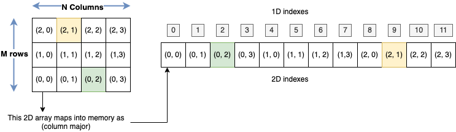

Dynamic Memory and 2D arrays as one dimensional arrays
Table of Contents
1. TODO Dynamic memory [/]
Goal: Learn how to use new and delete
A dynamic array is not limited by the stack size, it goes to the heap and can be (comparatively to the stack) very large.
But one has to be very careful with memory managment, always returning what we have asked for.
[ ]Create a dynamic array with size read from the command line args. Check memory comsumption
#include <iostream> int main(int argc, char *argv[]) { int N = std::atoi(argv[1]); double * data = nullptr; data = new double [N]; // ask for memory for(int ii = 0; ii < N; ++ii) { data[ii] = 2*ii/(2*ii + 1.0); } std::cout << data[N/2] << std::endl; delete [] data; // return memory return 0; }
Python/c++ tutor visualization
[ ]Memory leaks: Using
newwithoutdelete#include <iostream> void leaking(int N); int main(int argc, char *argv[]) { int size = 10000000; int reps = 1000; for(int ii = 0 ; ii < reps; ++ii) { leaking(size); if (reps%100 == 0) { std::cout << "Press enter\n"; std::cin.get(); } } return 0; } void leaking(int N){ double *localptr = new double [N]{0}; localptr[N/2] = 0.98; // no delete? }
Check compiling with and without
-fsanitize=leak, then run it withvalgrind
2. TODO 2D arrays modeled as 1d arrays
Goal: To learn how to operate matrices 2d arrays but using a large one
dimensional array.

How is the 2D array mapped into memory?

So how can I model the 2D array with the 1D array?

[ ]Write a program to model a matrix with a dynamic 1D array.[ ]Fill the matrix with the formula \(A_{ij} = 2*i + j\)[ ]Create a function to compute the trace of that matrix
#include <iostream> void fill(double *data, int nx, int ny); double trace(const double *data, int nx, int ny); int main(int argc, char *argv[]) { int nrows = 10; int ncols = 10; // get memory double * matrix = new double [nrows*ncols] {0.0}; // fill the matrix fill(matrix, nrows, ncols); // compute and print the trace std::cout << trace(matrix, nrows, ncols) << std::endl; // release memory delete [] matrix; return 0; } void fill(double *data, int nx, int ny) { } double trace(const double *data, int nx, int ny) { }
2.0.1. Exercises
- Write a program that computes the transpose of a matrix
- Write a program that compute matrix multiplication.
- Explore how the total multiplication time grows with the matrix size.